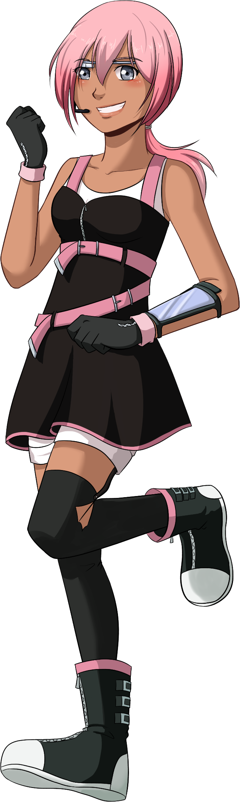
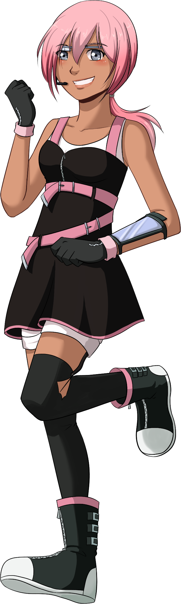

Aisu Aelisis
name: Aisu Aelisis
age: 14
date of birth: 11/2
hair color: pink
hair style: long in a low ponytail
skin tone: light brown
eye color: dark blue grey
height: 5 ft 2.24 in
ethnicity/race: Indigenous American
citizenship: The Tribal Lands of Vagor
key attribute: airheaded
Right-handed
body type: athletic petite
Character Bio/Personality:
Aisu is a bit of a tomboy and an airhead, but she always does her best.
She's a sporty girl and will always be down for a game of whatever.
She's also a bit of a savant when it comes to mechanics and is responsible for a good deal of the tech the Lovely Hearts use.
She also is Ami's willing accomplice in the task of pranking. Rayen's younger sister.